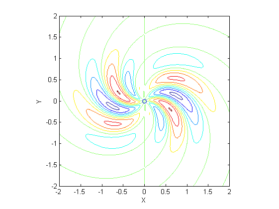
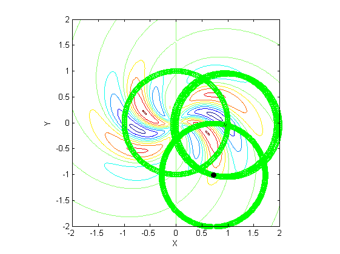
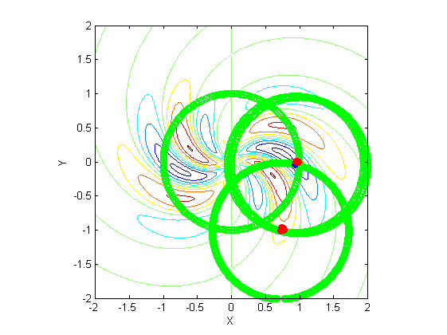
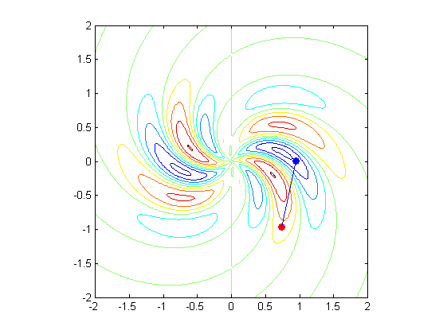

Finding the biggest delta-F if one drops a unit length pin in the XY plane.
Constants:
clear all clc n = 2; m = 50; x = -n:1/m:n; y = x; [X,Y] = meshgrid(x,y); radius = 1; xold = 0; yold = 0; deltaFmax = 0; % The "terrain" = function F theta = @(X,Y) atan2(Y,X); r = @(X,Y) sqrt(X.^2 + Y.^2); F = @(X,Y) X.*exp(-r(X,Y).^2).*sin(5*(r(X,Y)+theta(X,Y))); % The view contour(X,Y,F(X,Y)) hold on; axis equal % Starting at zero scatter(xold,yold); xlabel('X'); ylabel('Y'); axis([-2 2 -2 2]); xbig = 0; ybig = 0; foundlarger = 1; c = 0;
Do a circle plot and see if there are any better starting points
while foundlarger == 1 c = c + 1; [xbig, ybig, deltaFmax, foundlarger] = maxfind1(xold, yold, xbig, yold, deltaFmax, F, radius); scatter(xbig, ybig,'black','filled'); if foundlarger == 1 XY(c,:) = [xbig ybig]; end xold = xbig; yold = ybig; end
Which set of coordinates is the peak and which is the trough?
if F(XY(end, 1),XY(end,2)) > F(XY(end-1,1),XY(end-1,2)) peak = XY(end, :); trough = XY(end-1,:); end if F(XY(end, 1),XY(end,2)) < F(XY(end-1,1),XY(end-1,2)) peak = XY(end-1, :); trough = XY(end,:); end scatter(peak(1,1),peak(1,2),'red','filled'); scatter(trough(1,1),trough(1,2),'blue','filled'); [FinalPeak, FinalTrough, deltaFmax, localdeltaFmax, foundlarger] = maxfind2(peak, trough, F, deltaFmax);
figure(2) contour(X,Y,F(X,Y)); hold on; axis equal axis([-2 2 -2 2]); XX = [FinalPeak(1,1), FinalTrough(1,1)]; YY = [FinalPeak(1,2),FinalTrough(1,2)]; scatter(FinalPeak(1,1), FinalPeak(1,2),'red','filled'); scatter(FinalTrough(1,1),FinalTrough(1,2),'blue','filled') plot(XX,YY)